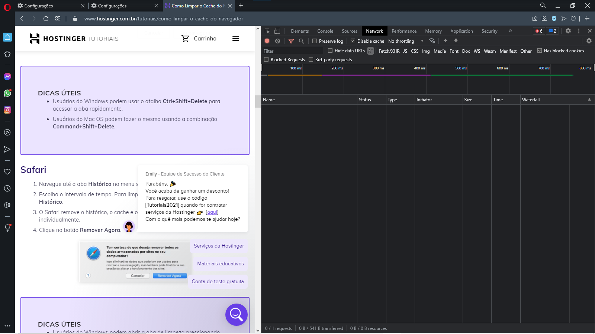
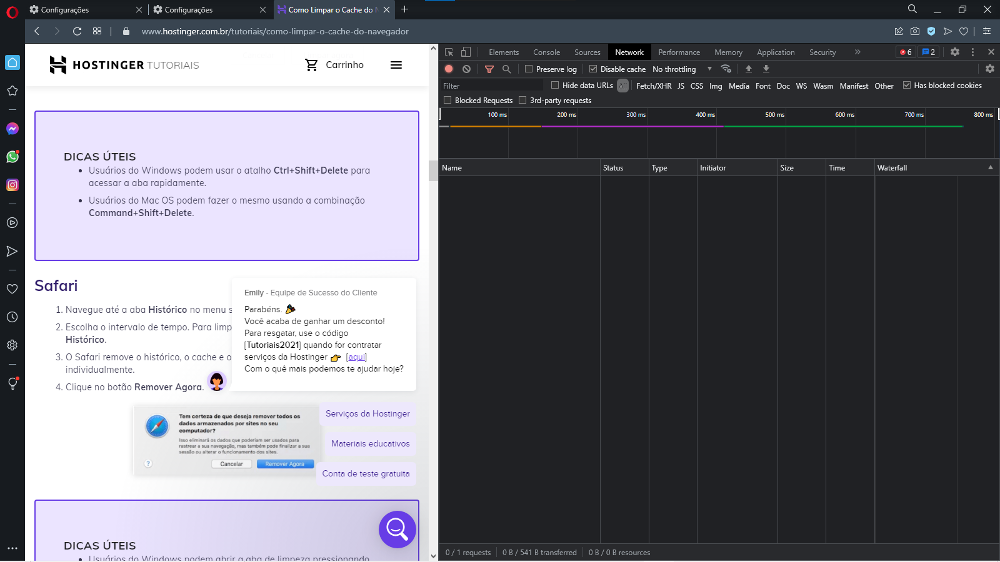

Em linguagem comum, cache significa armazenar algo com intenção de que possa ser útil no futuro. Um navegador ou cache da web faz exatamente isso: armazena em cache os “ativos estáticos” partes de um site que não mudam de uma visita para outra. Esses dados são então usados para carregar rapidamente informações sobre o aplicativo ou site sempre que ele for revisitado.
 
